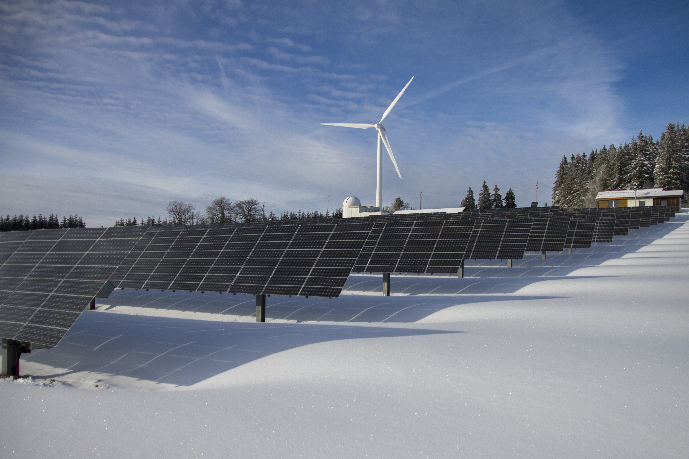

About
Background Information
Peace Island is located in the Caribbean Sea, just south of Jamaica. Explorer Rishabh Jain discovered the uninhabited island in early 2021. Rishabh Jain was inspired by the peaceful and calming sounds created by the wind and water, hence the name Peace Island. Rishabh Jain has since developed the island as the King. In 30 years, with lots of hard work, Rishabh Jain has completely transformed the Island into a desirable country to live in and visit for vacations.

Industries
Peace Island has taken appropriate advantage of its resources while respecting the ecosystems of the environment. To provide for its 10 million residents, Peace Island has many large industries, including solar energy, fishing, and tourism. These industries offer many resources to the community as well as high-paying jobs.

Exports
Peace Island has developed excellent relationships with neighbouring countries to create trade deals that allow both parties to exchange goods affordably. As a resource-rich country, Peace Island has many valuable exports, with the top few being exotic fruits, seafood, and herbal medicines.


Transportation
As a country driven to maintain sustainable practices and one that has access to a vast solar power grid, Peace Island has developed many electric vehicles. Peace Island’s finest engineers and scientists have been developing a fleet of electric models to fulfil everyone’s individual preferences. The vehicle manufacturer, PeaceElectric, offers sedans, hatchbacks, SUVs, coupes, pickups and trucks. Despite having electric vehicles, everyone is still encouraged to walk, cycle or take public transit when possible.

Culture
Popular Dishes
Among the many unique characteristics that distinguish Peace Island from its neighbours, it also features delicious dishes. A popular breakfast option is an exotic fruit salad containing a variety of locally sourced fruits, including mangos, dragon fruit, star fruit and passion fruit. While the fruit salad is commonly served in a bowl, another option is to blend and achieve a refreshing morning smoothie. Many Peace Islanders grow tomatoes in their home gardens and farms. Due to the ample supply of tomatoes, generations have perfected their favourite tomato-based dish. Some options include a creamy tomato soup, tomato-sauce pasta, and sundried tomatoes. Seafood dishes are also very popular amongst Peace Islanders. Many families prefer to go fishing and catch their own seafood both for the cost savings as well as the enjoyment. Some popular seafood dishes include smoked salmon, shrimp and crab cake.
Common Activities
The residents and tourists of Peace Island partake in a multitude of entertaining activities. While the activities vary based on interest and age group, many find common enjoyment in sailing, swimming, surfing and snorkelling. These are fantastic activities that families and friends can partake in and enjoy the nature and scenery that Peace Island offers. The activities have also become popular amongst tourists and are standard in many vacation packages.